Week 6. Semantics#
TL;DR [slides]
Basic semantic intuitions: Truth conditions; Semantic inference
Sentence semantics vs. lexical semantics
Types of word meanings
Semantic composition: building meanings from meanings of parts
Structural ambiguity revisited
Semantics and language technology
Lexical semantics resources
Semantic parsing and natural language inference
Basic notions and intuitions#
This week, we will talk about meanings. Previously, we discussed morphemes and words as things that have meanings – and we did it kind of pretending that we know what meaning is. Today we will try to make this notion more precise, as part of this short intro to semantics.
Important notion
Semantics is a discipline that studies meaning of different linguistic expressions – morphemes, words, phrases, sentences.
As it often happens with these terms, ‘semantics’ is used to refer not only to the discipline itself, but its object of study as well. You can say something like ‘the semantics of this phrase’ in a way that is roughly synonymous to ‘the meaning of this phrase’.
Sentence meanings#
Linguistic units of different sizes convey meanings, and we will talk about how meanings of bigger units can be seen as combinations of meanings of smaller ones. But for now, let’s start with sentences and what they mean. Instead of asking this directly – What does sentence X mean? – we can ask a more instrumental question, something that is easier to approach in practice. For instance, What do you know when you know the meaning of sentence X? – or maybe even How do we find out whether someone knows the meaning of sentence X?
Take the sentence A cat is sitting on a chair. We know what this simple sentence means, and this knowledge shows in a number of ways – for one, we are able to distinguish situations which can be truthfully described by this sentence from situations in which this sentence is false. The sentence A cat is sitting on a chair is true in the left-hand situation, but not in the right-hand one – as is evident to every speaker of English:
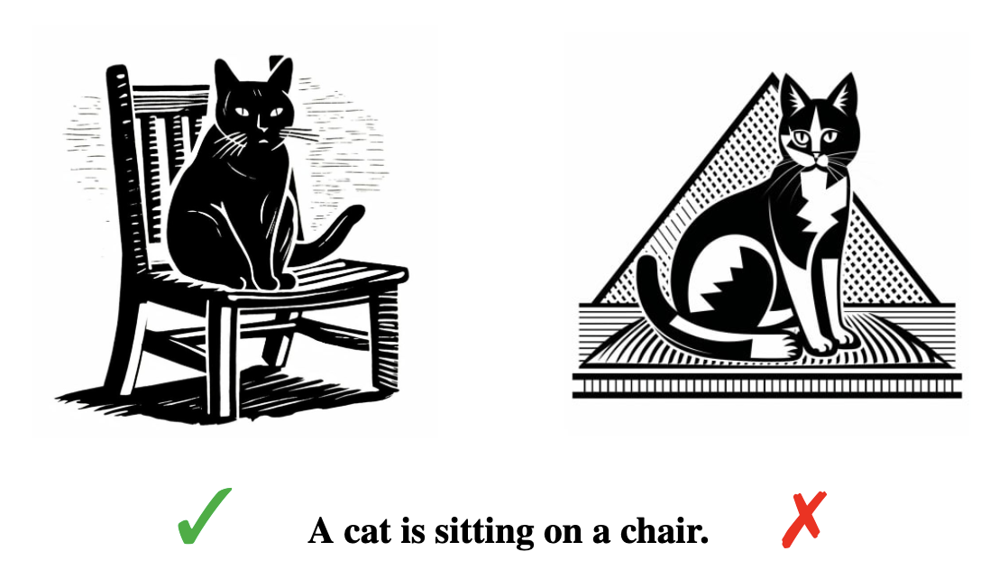{kind=link}
As trivial as this observation may seem, it’s the intuitive basis for the currently most widespread and influential approach to linguistic meanings, truth-conditional semantics. So, one core thing we know when we know what a sentence means is its truth conditions – what the world has to look like for the sentence to be true.
It’s important to distinguish truth from truth conditions. The sentence Paris is the capital of France is true in the real world, we know that. But we also know what makes it true and how to check if it’s true (there’s a city called Paris, it’s in France, French government sits there etc. etc.). For some sentences we don’t know if they are true or false in the real world, but we are able to distinguish situations in which they are from those in which they are not. Given a sentence and a situation (or state-of-affairs), we are able to conclude whether the sentence is true in it. This is the core of sentence interpretation. We can make it precise and think of sentence interpretation as a function, let’s call it I. Quite like functions in programming, this function takes input and produces output. We organize function I in such a way that it takes two arguments as input: a sentence and a situation; as output, it returns True if the sentence is true in this situation, and False otherwise:
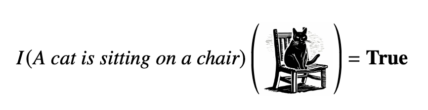{kind=link}
This information can be organized in other ways: for instance, we can think of related functions I’ and I’’. Say, I’ takes one argument, a sentence, and returns a set: different situations, each paired with True if the sentence is true in this situations and false otherwise. Or we can have I’’, where the input is again the sentence and the output is the set of only those situations in which the sentence is true.
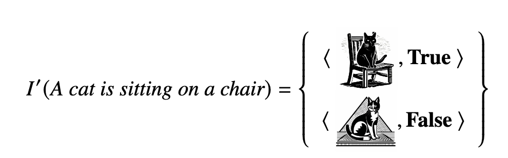 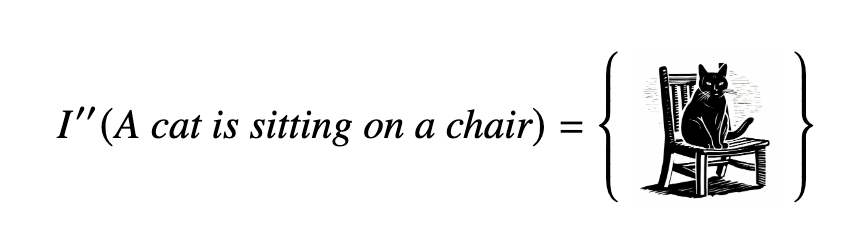{kind=link}
{kind=link}
All these ways of organizing relations between sentences and situations against these sentences can be evaluated for truth are actually used in linguistic literature, so it’s worth meditating on these a bit.
Let’s look at another example. Here is one sentence the truth value of which in the real world the readers of these notes are very unlikely to know:
Is this true? Who is Acciuga, anyway? Maybe she’s a dog, maybe she is a penguin, maybe she is a mammal? A spaniel? A cat? What’s the situation with Acciuga? Let’s draw this as a space of possible situations / states of affairs, something like this:
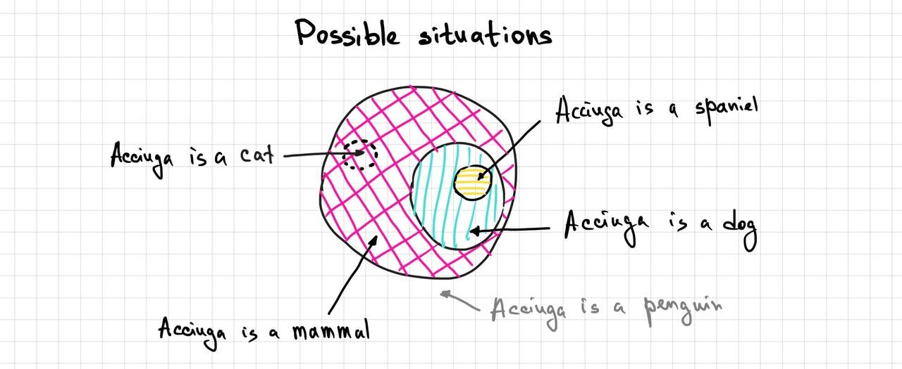{kind=link}
If we think of all these possible situations as a set, we can see systematicity in its organization. For instance, the set of all possible situations in which Acciuga is a dog is a proper subset of all possible situations in which Acciuga is a mammal – all dogs are mammals, but mammals can be dogs but also many other things. The set of Acciuga-is-a-cat situations is disjoint with Acciuga-is-a-dog situations, and so on and so forth.
In line with what we did with cats above, we can represent sentence interpretation function I with respect to this structure of possible situations in the following way:
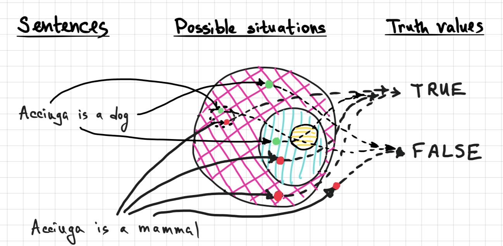{kind=link}
Here, when we are interested in a sentence about Acciuga, we pick a possible situation and examine it against the aspects of situation that are important for the truth of the sentence of interest – and then we conclude whether this sentence is true in this situation. This is how sentence interpretation works – or, rather, how we can think about it formally.
In the actual world, Acciuga is a dog, by the way. So we are somewhere in the blue circle of possible situations – which is also inside the pink circle. I’m not sure what kind of dog Acciuga is, so I don’t know if we are in the little yellow circle. But definitely not in the Acciuga-is-a-cat region.
The recipe for sentence interpretation above is sometimes called direct interpretation – as opposed to indirect interpretation. Under indirect interpretation, an additional step is involved: the sentence of natural language is translated into some formal language, as here below, where the formal language is predicate logic. Then the predicate logic formula can be evaluated for truth or falsity against a possible situation.
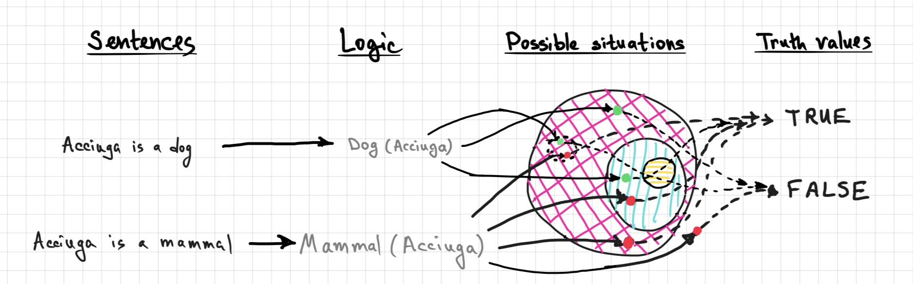{kind=link}
Why add another step? Because once we have a formula in a well-behaved logic, things with interpretation become easier, the world of logic is much less messy than that of natural language. If two-step interpretation is adopted, the main worry of a semanticist is the step of translation from natural language to logic, and that is basically what the NLP task of semantic parsing is concerned with. I kind of like direct interpretation though, to be honest.
Discussion point
The idea of truth conditions as the core of sentence meaning seems easy and actionable, so overall nice. But it’s clear that it is not applicable to all sentences across the board. What about questions? A question cannot be true or false – does the idea of truth conditions apply to questions at all? What about imperatives? Can we think about a way to extend the idea of truth conditions to commands?
A note is due on the truth values here. So far we talked about just two truth values: True and False. There are cases when these two do not seem enough. Consider the following sentence:
Is this sentence true in the actual world? What truth value would an interpretation function return if the sentence is assessed against the actual state of affairs? Certainly not True – there is no king of France. But False maybe is not a good choice either – there’s no king of France for us to go check for baldness and find that he’s not bald. This sentence has a presupposition that there is a king of France: his existence is sort of taken for granted in this sentence, and then it states something about this person. But the presupposition is actually not true, so basing statements on it does not make any sense. For these kinds of cases a third truth value is often introduced: Undefined.
So, we established that one thing we know when we know sentence meaning is truth conditions. There is one more. Knowing what a sentence means allows us to draw conclusions from this sentence. We know what we can conclude from it and which conclusions are not justified. Here is one justified inference:
⇒ Acciuga is a mammal.
Note that this does not state the truth of a sentence Acciuga is a mammal. This states the relation between two sentences: from Acciuga is a dog we can infer Acciuga is a mammal. Here is one invalid inference:
⇏ Acciuga is a dog.
The truth of Acciuga is a mammal does not guarantee the truth of Acciuga is a dog – what if she is a cat?
This knowledge about what is a valid conclusion from a sentence is another fundamental semantic intuition, along with knowledge of truth conditions. These two types of intuition differ in a fundamental way: truth conditions connect a sentence to some external, non-linguistic reality (situations, states of affairs, or possible worlds, in different terminologies and systems). Semantic inference connects two linguistic objects between each other, it’s a relation between sentences. It’s an important distinction, but these two semantic intuitions are also related: we can look at semantic inference through the lens of possible situations. The validity of the inference Acciuga is a dog ⇒ Acciuga is a mammal is reflected by the fact that Acciuga-is-a-dog situations are a subset of the Acciuga-is-a-mammal situations. Inferences can be drawn from subsets of situations to supersets. But not the other way around!
Word meanings#
We talked about the meaning of sentences in terms of their truth or falsity. What about words? Let’s use the mammal example again and zoom in to one particular situation and look around. There are different things here – animals, birds, all sorts of stuff. Let’s refer to these things in the most general way, entities. So, some of the entities are dogs, some of them are cats, penguins, spaniels.
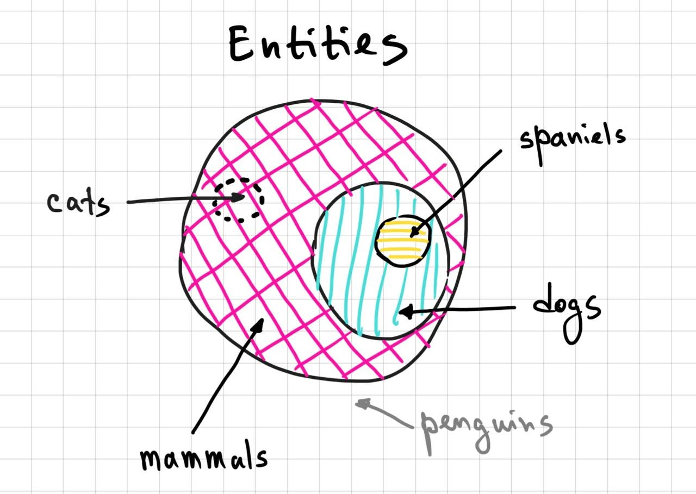{kind=link}
We can focus on each particular entity in this set and ask ourselves: is this a dog? Sometimes we would answer ‘yes’, sometimes ‘no’. Let’s build the semantics of nouns like dog, cat, spaniel etc. over exactly this procedure. Interpretation of nouns can be thought of as a function (very similar to I from above!) that, given a noun and an entity, returns True if the entity belongs to the class described by the noun, and False otherwise. Another related way of thinking about the same kind of thing is a function such that takes the noun and the set of entities as input and returns a subset of this set – only those entities to which this noun truthfully applies:
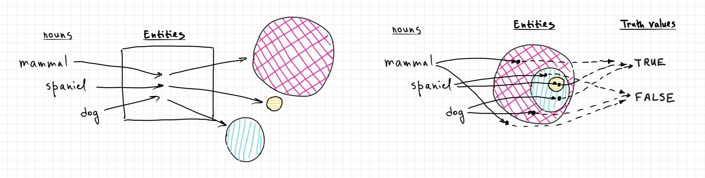{kind=link}
A tiny question along the way
The version on the left is parallel to I’’ for sentences, while the version on the right is parallel to I. How would I’ look when applied to nouns?
Recall an illustration from the Morphology chapter, where cat was discussed as a one-morpheme linguistic unit that associates meaning with sound? We can now maybe reassess the meaning side of that figure:
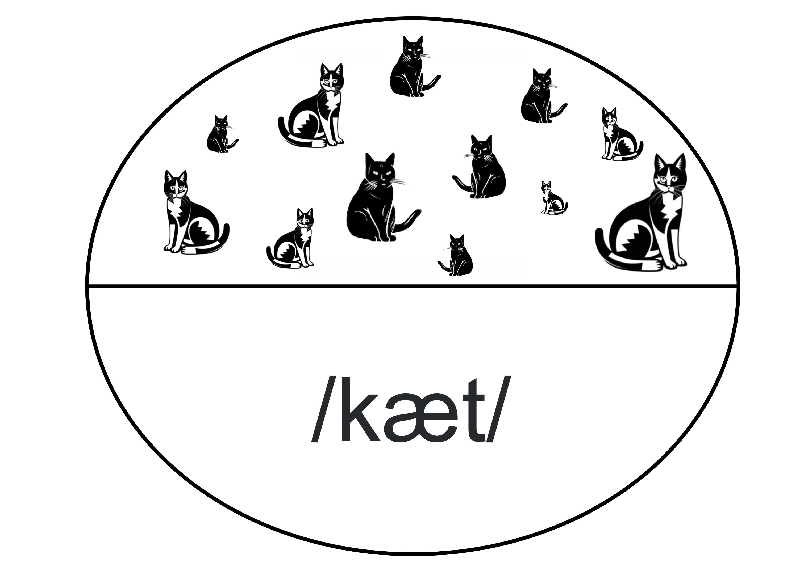{kind=link}
While common nouns like cat or dog are devices to describe classes of entities, proper names are there to pick one particular entity from the set. Formally, we can think about interpretation of proper names as a function that, again, takes the whole set of entities as its input, but what it returns is not a subset of this set, but one single entity:
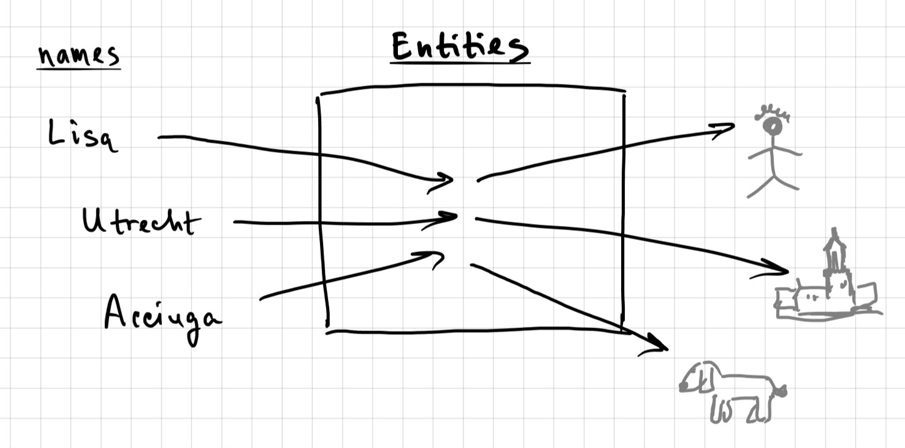{kind=link}
What about other classes of words? Adjectives, verbs? Adjective meaning is the same kind of meaning as that of common nouns: adjective like wooden picks out the set of wooden entities, quite like dog picks out the set of dogs. Intransitive verbs like ran work in the similar way: it picks out those entities who ran. Transitive verbs introduce a complication: if the event has two participants, what should the interpretation of a transitive verb output? One straightforward way to do it is make transitive verbs pick out not just a set of entities, but a set of pairs. In the case of attack interpretation would return a set of pairs, each pair consisting of the attacker and the one who is attacked by that attacker.
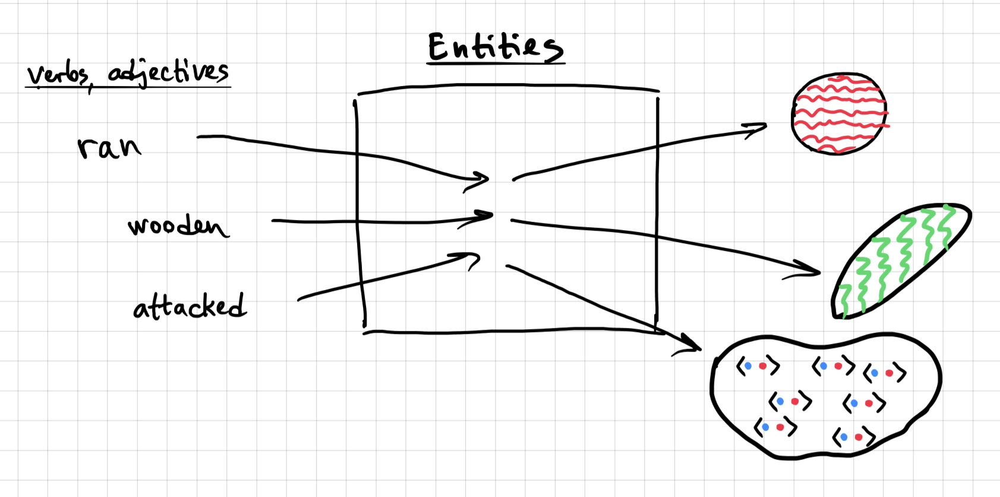{kind=link}
A tiny question along the way
Think about a verb that denotes a set of triples.
Here’s one more class of words to think about: pronouns like she or he. What do those words mean? On the one hand, they seem similar to proper names rather than common nouns: in a sentence like John is worried he will be late the pronoun he can be understood as related to John, that is, they refer to the same person. If these two expressions refer to the same person, it’s natural to think they both have the same kind of meaning: they denote an individual. Maybe pronouns are semantically just proper names?
Well, not exactly. Unlike with proper names, the individual that pronouns pick out constantly varies. If we slightly change the sentence – Bill is worried he will be late, the pronoun picks out Bill, not John. So, the pronoun is kind of like a name, but a name whose actual value is assigned to it by the context. Probably a good way to think about the meaning of pronouns is in terms of a variable: it’s a placeholder, a temporary name, whose actual value can vary depending on the properties of context it appears in. That’s not how actual proper names work.
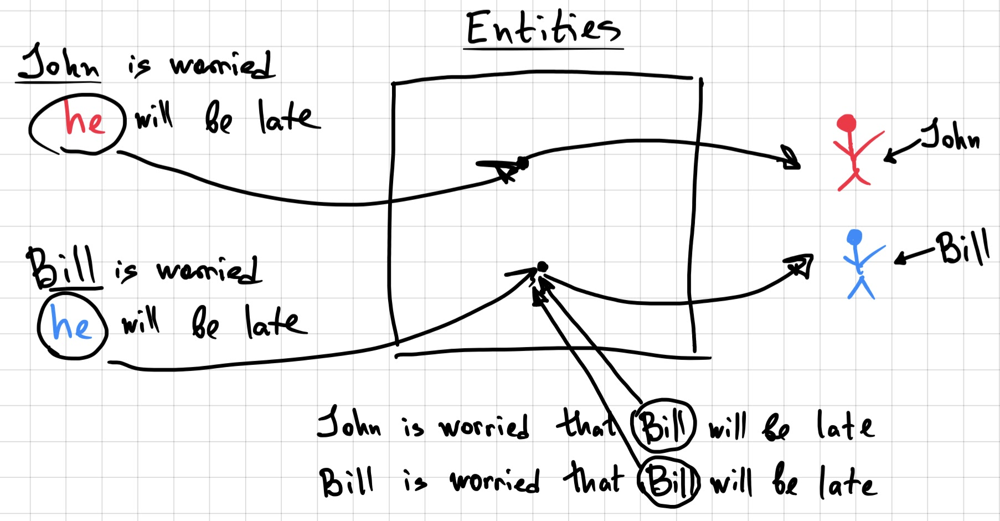{kind=link}
The task of figuring out which value the pronoun should take, given the choice of candidates from the context, is the task of coreference resolution – not always an easily solvable task!
Extra info
What about adverbs like quickly, late etc.? Intuitively, they characterize events in the way parallel to how adjectives characterize entities: some events are late while others aren’t in a way parallel to how some objects are wooden while others aren’t. We haven’t talked about events as separate kinds of things alongside with object-like entities – but we could. And maybe we should!
Having two sorts of entities – individuals and events – would also allow us to formulate rather straightforward interpretation for semantic roles such as Agent and Patient, discussed last week. Agent, for instance, could be defined as a 2-place relation between an event and an individual, very much like the verb attack is a 2-place relation between the attacker and the attacked. In the case of Agent, the interpretation function would spit out the set of all pairs of events and individuals such that the individual is the agent of that event. Fancy.
Meaning relations#
Once we start talking about word meanings in set-theoretic terms, we can use Venn diagram-style visualisations of classic meaning relations. Let’s limit ourselves to words that denote sets of entities, more specifically, nouns and adjectives.
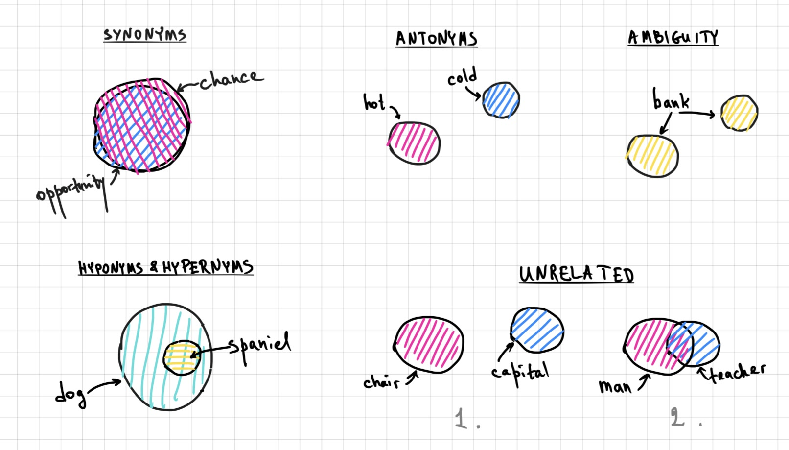{kind=link}
Synonyms – words that mean more or less the same thing – in our terms, pick out sets of entities that completely or almost coincide. Example: chance and opportunity.
Hyponyms and hypernyms stand in proper subset-superset relation with each other. Dog is a hypernym of spaniel, spaniel is a hyponym of dog.
Antonyms are two words with opposite meanings. In terms of sets of entities, it means that the corresponding sets do not overlap: there’s no entity that’s simultaneously hot and cold.
Words that don’t bear any semantic relation to each other might denote sets that don’t overlap at all, such as chair and capital, or they might partially overlap, such as man and teacher: there are teachers that are men, there are men that are teachers, there are teachers that are not men and there are men that are not teachers.
Lexical ambiguity is not really an example of a semantic relation between two words, it’s practically the opposite – one word that has two different sets of entities of its denotation.
Wait, this doesn’t really make much sense – what we said above does not allow us to distinguish between antonyms and one type of semantic unrelatedness, and also how do we find the two sets in what an ambiguous word denotes to make sure they are different enough from each other in order to count the word as ambiguous? Fair enough, the simple set-theoretic description is not sufficient to make these distinctions. For example, antonyms are supposed to have meanings that are very far from each other – but working with just sets in a way that we do does not give rise to distances. Something else has to be added to the toolbox. We will not be doing this now, and these pictures above remain illustrations, not definitions.
Semantic composition#
Finally, let’s connect the meaning of larger linguistic expressions to that of smaller ones, words. The guiding idea of this connection is the idea of compositionality:
Important notion
The meaning of an expression is compositional if it can be calculated based on the meaning of its smaller parts and the way they are put together.
Compositionality is a principle (language is fundamentally compositional), but also a goal – linguists try their best to put together semantic analyses that are as compositional as possible. For some cases it’s easier, for other cases it’s harder, but in some core cases it’s kind of obvious. Let’s take our running example Acciuga is a dog. We know the meaning of two main words here – Acciuga is an entity, dog is a set of entities. Now, these words are combined in this sentence with a is-a construction that turns these two word meanings into a sentence meaning – namely, if the entity (Acciuga) is a member of the set (set of all dogs), the sentence is true, otherwise false:
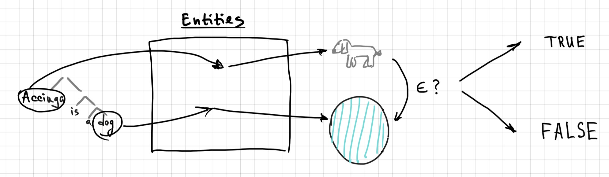{kind=link}
This is semantic composition of two meanings, where one is an entity and the other is a set of entities. What if we need to combine two sets? Here is an example: a noun phrase consisting of an adjective and noun, say, wooden mammal. The meaning of this resulting phrase is a set of entities such that each of them is both wooden and a mammal (maybe the intersection should in fact be empty..) – so, the combination of these two meanings is set intersection:
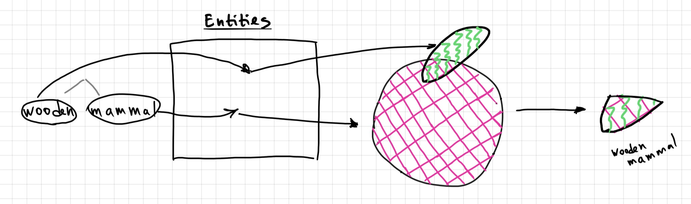{kind=link}
These examples show that syntax and semantics go hand in hand, if we take compositionality seriously: composition of meanings follows syntactic composition of the phrase. Semantic rules apply where syntax puts two words together. This explains the nature of structural ambiguity that we saw last week, recall the example They see a cat with the telescope: there are two possible structures this sentence can be associated with, which also correspond to two different meanings – because the meanings are built off of syntactic structure.
NB!
Syntax and semantics go hand in hand, but they are not the same thing: a sentence can be syntactically well-formed but semantically deviant. The classic example of such sentence is Noam Chomsky’s Colorless green ideas sleep furiously, which is grammatical, but means something pretty weird.
But maybe better examples of semantic deviance accompanied by syntactic well-formedness are sentences like The student is numerous or something like More people have been to New York than John did. Colorless green ideas sleeping furiously is just a very weird and unlikely kind of situation – but the very fact that there are so many pictures visualizing what this might look like kind of suggest that in some remote possible world this could be true. These othe two examples, however, push this weirdness to the limit.
We can see how this works step by step with a somewhat simpler example, a noun phrase expensive vodka and whiskey. This phrase is structurally ambiguous: under one analysis, expensive vodka is one constituent and then whiskey is another one, the two put together by conjunction and; under the other analysis, vodka and whiskey is one constituent and expensive attaches to it as a whole. These two structures produce two different meanings of the whole noun phrase, let’s see how. Let’s start with the structure of the situation we will be dealing with. There’s a set of things that are vodka, a set of things that are whiskey (these two sets don’t overlap), and then there is a set of expensive things – it partly overlaps both with vodka and whiskey.
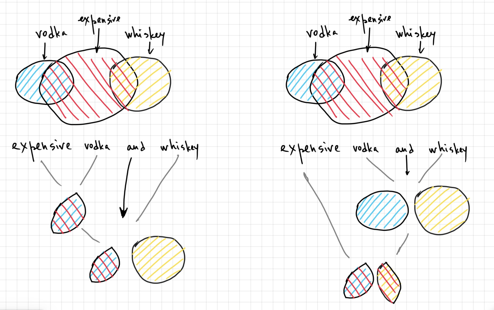{kind=link}
In the first structure, expensive vodka is first composed, with the interpretation that’s exactly parallel to that of wooden mammal above: the result is the intersection of all expensive things and all vodka things. Then this set is combined with the set of all whiskey thigns. In the second structure, first the sets of vodka things and whiskey things is put together and then the result of that is intersected with expensive things. The results are different in that in the first but not in the second case the cheap whiskey is part of the meaning of the resulting phrase – a direct effect of syntax on semantics.
So, semantics works with syntactic information – if we think what it means for the architecture of the system that maps sentences to their meanings, we must conclude that the input to this system is not sentences as sequences of words, but sentences with syntactic structure assigned to it. We can now re-draw diagrams of direct and indirect interpretation so that they reflect this point:
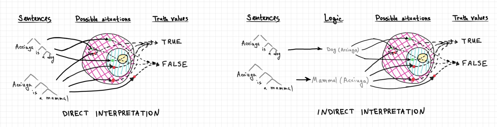{kind=link}
I guess if these wild diagrams make sense to you, the goal of my intro to semantics is achieved.
Semantics and language technology#
The theoretical part of today’s lecture spelled out how sentences and smaller units – words and phrases – relate to non-linguistic stuff (something we called ‘possible situations’ and ‘entities’ that populate these situations) and to each other, and how meanings of bigger units are built from meanings of smaller parts. What does it have to do with language technology? Everything! One might say that this is the core of what we want computers to do when dealing with language – understand it. What we mean by ‘understand’, it has to include at least some of the above. The field of Natural Language Understanding (NLU) includes, generally speaking, all tasks that are best defined with reference to the meaning of texts and smaller linguistic units. Some of such tasks are:
text summarization;
question answering;
information extraction;
topic modelling;
sentiment analysis.
In addition to those (this list is far from complete!), there are tasks and resources that target the particular ingredients of meaning that we discussed above even more directly. I will briefly introduce just three of those, one having to do with lexical semantcs and two having to do with sentence semantisc.
WordNet: Organizing lexical information#
Not many downstream tasks have to do with word meanings directly and exclusively: word meanings are building blocks for meanings of sentences and larger texts, and those are, in turn, the typical units of tasks in NLU. But lexical information is important for those tasks too.
One classic and still very prominent and used resource that organizes lexicon according to semantic relation of words to each other is WordNet. Here is what they say:
Nouns, verbs, adjectives and adverbs are grouped into sets of cognitive synonyms (synsets), each expressing a distinct concept. Synsets are interlinked by means of conceptual-semantic and lexical relations.
Let’s look at some of the things one can do with WordNet. First, we can look up a word and check with synsets it belongs to. If the word has just one meaning, it will end up in one synset. If it’s ambiguous, it will end up in more than one. For example, the word espresso has one meaning, but bank is ambiguous (maybe more ambiguous according to WordNet than one would’ve thought, so we crop the list at 5):
from nltk.corpus import wordnet
print('Espresso: ' + ', '.join([str(x) for x in wordnet.synsets('espresso')]))
print('Bank: ' + ', '.join([str(x) for x in wordnet.synsets('bank')[:5]]))
Espresso: Synset('espresso.n.01')
Bank: Synset('bank.n.01'), Synset('depository_financial_institution.n.01'), Synset('bank.n.03'), Synset('bank.n.04'), Synset('bank.n.05')
Let’s check out the definitions of these first two synsets for bank and words that belong to them, to see what these synsets are about:
bank1 = wordnet.synset('bank.n.01')
bank2 = wordnet.synset('depository_financial_institution.n.01')
print('Definition:', bank1.definition())
print('Words in this synonym set:', ', '.join([x.name() for x in bank1.lemmas()]))
print()
print('Definition:', bank2.definition())
print('Words in this synonym set:', ', '.join([x.name() for x in bank2.lemmas()]))
Definition: sloping land (especially the slope beside a body of water)
Words in this synonym set: bank
Definition: a financial institution that accepts deposits and channels the money into lending activities
Words in this synonym set: depository_financial_institution, bank, banking_concern, banking_company
Oh, I see now. Ok. Let’s now list hyponyms (not all of them, just the first 3) and hypernyms of each of these two different banks – recall the discussion about what hyponyms and hypernyms are above!
print('Hypernyms:', bank1.hypernyms())
print('Hyponyms:', bank1.hyponyms()[:3])
Hypernyms: [Synset('slope.n.01')]
Hyponyms: [Synset('riverbank.n.01'), Synset('waterside.n.01')]
print('Hypernyms:', bank2.hypernyms())
print('Hyponyms:', bank2.hyponyms()[:3])
Hypernyms: [Synset('financial_institution.n.01')]
Hyponyms: [Synset('acquirer.n.02'), Synset('agent_bank.n.02'), Synset('commercial_bank.n.01')]
What else? We can check what the lowest common hypernym is for a pair of synsets – it can tell us a lot about how similar or different the meanings of two words are. The two meanings of bank are pretty far from each other – the closest common category they belong to is entity:
bank1.lowest_common_hypernyms(bank2)
[Synset('entity.n.01')]
In fact, WordNet defines a metric of meaning similarity based specifically on the number of steps on the meaning relation graph between two words (synsets, to be more specific). It’s a symmetric measure with values from 0 (super-far) to 1 (exactly the same):
print('Similarity of bank1 to itself:', bank1.path_similarity(bank1))
print('Similarity between bank1 and bank2:', bank1.path_similarity(bank2))
print('Similarity between bank2 and bank1:', bank2.path_similarity(bank1))
Similarity of bank1 to itself: 1.0
Similarity between bank1 and bank2: 0.07692307692307693
Similarity between bank2 and bank1: 0.07692307692307693
WordNet can give you synonyms of a word per synset it’s found in:
for ix, syn in enumerate(wordnet.synonyms('bank')[:7]):
if syn:
synset = wordnet.synsets('bank')[ix]
print(str(synset) + ': ' + synset.definition())
print('\tSynonyms: ' + ', '.join(syn))
Synset('depository_financial_institution.n.01'): a financial institution that accepts deposits and channels the money into lending activities
Synonyms: banking_company, banking_concern, depository_financial_institution
Synset('bank.n.07'): a slope in the turn of a road or track; the outside is higher than the inside in order to reduce the effects of centrifugal force
Synonyms: camber, cant
Same for antonyms (except that antonyms in WordNet work on the level of lemmas rather than the level of synsets):
for synset in wordnet.synsets('bank'):
antonyms = [x.antonyms() for x in synset.lemmas() if len(x.antonyms())]
if antonyms:
print(str(synset) + '(' + ', '.join([x.name() for x in synset.lemmas()]) + '): '+ synset.definition())
for antonym_set in antonyms:
print('\tAntonyms:', ', '.join([x.name() for x in antonym_set]))
Synset('deposit.v.02')(deposit, bank): put into a bank account
Antonyms: withdraw
Synset('trust.v.01')(trust, swear, rely, bank): have confidence or faith in
Antonyms: mistrust, distrust
I think we can agree that WordNet is a pretty useful resource! It’s not the only resource of this kind, see also, for example, ConceptNet.
Resources like these are linked to tasks defined over word meanings. One such task is Word Sense Disambiguation (WSD): given an ambuguous word in context, a WSD model outputs the meaning the word has in this particular context. In order to precisely formulate this task, a list of possible word meanings has to be defined for the word in question. One of the ways to come up with such list is to use WordNet synsets that the word participates in. Then the WSD model can do something like the following:
from nltk.tokenize import word_tokenize
from nltk.wsd import lesk
sense1 = lesk(word_tokenize("We sat on the slope of the bank on the wet land near the water."), 'bank')
print(sense1, sense1.definition())
sense2 = lesk(word_tokenize("The bank accepted the financial deposit into our account."), 'bank')
print(sense2, sense2.definition())
Synset('bank.n.01') sloping land (especially the slope beside a body of water)
Synset('depository_financial_institution.n.01') a financial institution that accepts deposits and channels the money into lending activities
Sentence meaning: Semantic Parsing#
One task defined mostly over sentences rather than words is semantic parsing. Remember how for indirect interpretation an intermediate logical representation is introduced: natural language is translated into logic, and formulas of logic are then interpreted according to whatever interpretation system is designed for this type of logic. In a sense, this translation step can itself be seen as the semantics of natural language – because what happens after that is the semantic of logic. This is a subtle step and there are different opinions on this set-up and possible alternatives, but one thing is clear: translation of natural language into logic helps create well-defined unambiguous representations that are very useful for practical applications.
One rich resource containing sentences (and their syntactic analyses) in several languages, paired with semantic representations, is developed here in Groningen: Parallel Meaning Bank (PMB). Semantic and syntactic representations in PMB are enriched with lexical information – more specifically, WordNet synset IDs are assigned to words, where applicable. Today’s homework will involve studying PMB representations and doing lexical semantic annotation, so I will not say more here.
Sentence meaning: Natural Language Inference#
We talked about two fundamental semantic intuitions about sentences:
How sentences relate to possible situations / states of affairs where they can be true or false (truth conditions);
How some conclusions, or inferences, can be drawn from a sentence, while others can’t be (semantic inference).
When we think about the first intuition and a lot of recent NLP systems trained exclusively on text, we might wonder if natural language understanding is even in principle achievable by such models: if all these models see during training is text, they have no way of connecting language to these language-external objects – situations, objects, events, dogs, penguins. This is indeed an argument that has been made before, in a very influential paper that true natural language understanding for such models is impossible:
Bender & Koller. 2020. Climbing towards NLU: On Meaning, Form, and Understanding in the Age of Data. ACL.
This paper has a point, but things are probably more complicated than that. First, a lot of recent models are not trained on text exclusively but receive a lot of additional information of different kinds, and we don’t really know what the role of all this additional information is to brining models closer to what we would be more willing to call ‘understanding’. Second, there is also semantic inference! And given that this core semantic notion is defined over texts (pairs of sentences exclusively), it can well be the door for semantic information. How much of it? What kind? How far can inference get us? We don’t really know, but we (quite a lot of people, actually) are looking into it.
For those interested in this debate, I suggest this very nice and clear Medium post by Christopher Potts on this topic (a sort of a reply to the Bender & Koller paper above):
Potts. 2020. Is it possible for language models to achieve language understanding?. Medium post.
An NLP task that models the semantic inference intuition that I’ve been referring to is the task of Natural Language Inference (NLI). Here is how it’s formalized: an NLI model takes a pair of sentences and predicts the semantic relation between them. It’s a classification task, so the output is one of, usually, three labels:
Entailment (the second sentence follows from the first one);
Neutral (given the first sentence, nothing can be said about the truth of the second one);
Contradiction (the second sentence can’t be true if the first one is).
There is a lot of NLI models out there – the task of NLI has been attracting a lot of interest recently. Let’s pick one and see what it does.
from transformers import pipeline
nli = pipeline("text-classification", model="sileod/deberta-v3-base-tasksource-nli")
Now that we loaded the model, we can give it two sentences as one string, where the sentences are separated from each other by a service token [SEP] specific to this particular type of model I picked. The model will output the prediction:
nli("Acciuga is a dog. [SEP] Acciuga is a mammal.")[0]['label']
'entailment'
This seems right! Note that this is not world knowledge about Acciuga – who exactly Acciuga is in the actual world doesn’t matter for this prediction. What matters that if she’s a dog, she’s also a mammal. That’s the core of the inference as a relation between pairs of sentences.
The model also does well on two other pairs of sentences that were our examples in the theoretical part of today’s lecture:
nli("Acciuga is a mammal. [SEP] Acciuga is a dog.")[0]['label']
'neutral'
nli("Acciuga is a cat. [SEP] Acciuga is a dog.")[0]['label']
'contradiction'
This is nice, but it’s important to note that NLI models are far from perfect, and the general task of NLI is far from solved. Even the best NLI models systematically produce predictions that are hard to reconcile with our semantic intuitions:
nli("Acciuga is a dog. [SEP] Charlie is a dog.")[0]['label']
'contradiction'
The fact that Acciuga is a dog doesn’t preclude other individuals (for instance, Charlie) to be dogs as well – but the model predicts it’s a contradiction. Predictions like these are consequences of datasets, training procedures and evaluation benchmarks that characterize performance of NLI models. There’s a lot of work to be done.
A lot more could be discussed here, but this will have to do for now. I hope this plants seeds that have the potential to grow into more serious interest for some of you (I didn’t navigate this metaphor well, did I).
Homework 6
This week’s assignment is Parallel Meaning Bank annotation, annotation tasks are distributed among students individually.